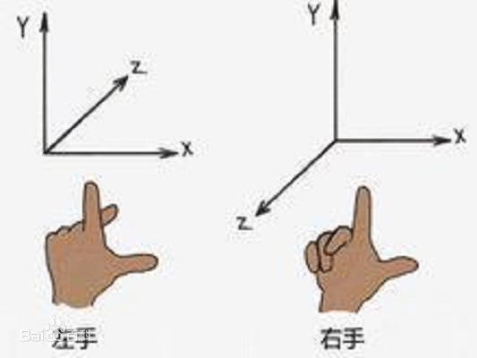
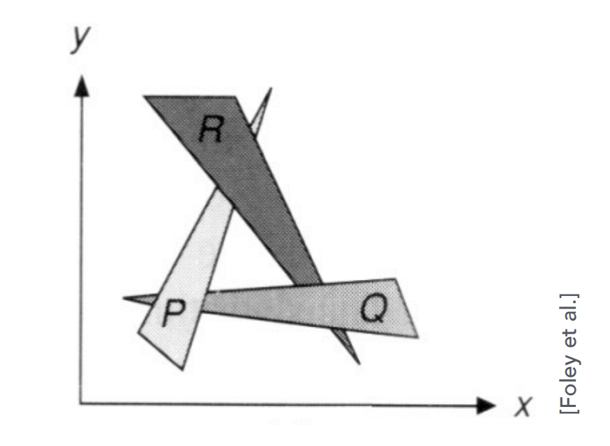
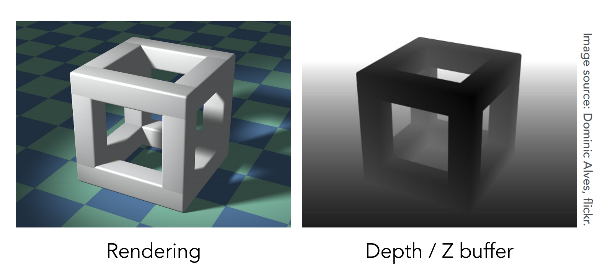

webgl坐标系
技术上常常把空间中的 XYZ 坐标系分为左手坐标系和右手坐标系。如果左手坐标系的 X 轴正方形水平向右，Y 轴正方形垂直向上，那么 Z 轴正方向就是从近向远，三个轴两两垂直，这就是左手坐标系。同理右手坐标系直接把 Z 轴正反方向进行了调换。 webgl 坐标系左手坐标系，很多地方误解了这一点。
下一节【深度缓冲区】解释了 webgl 为什么是左手坐标系，我可不是张口就来，网上那些说 webgl 是右手坐标系的人 Z 轴方向被底层调换了都不知道。
图片来自百度百科
同时 webgl 在渲染时，只会渲染三个轴的区间在 [-1,1]3 内的图像。例如一个三角形一个点在原点，另外两个点分别是 A$(0.5,0)$ 和 B$(2,0)$，那么 B 点就会超出渲染区域，这个三角形超出的部分就不会渲染。这不仅适用于 X Y 轴，Z 轴同理。
深度缓冲区
本节内容之前的示例中，我们的代码都可以避开 Z 轴坐标，如果真有重叠的情况，webgl 也不会进行处理，默认情况下，webgl 实际上是根据缓冲区的顶点依次进行绘制的，排在前面的顶点会优先绘制。
也就是说，默认情况下如果我们希望绘制近出物体之间的遮挡效果，就需要把远处物体的顶点放到缓冲区的前面。简单的情况当然可以手动解决，但是如果改变视野方向，我们不可能手动在 js 中把顶点前后顺序处理好后再丢给 webgl，这样就失去了着色器快速计算的意义。
而且假设有三个物体 A B C，也会有 A 遮挡了 B，B 遮挡了 C，C 又遮挡了 A 的套娃情况，这样哪个物体后后面就成了一个问题。比如：
图片来自 games101
为此，图形学中就采用了一个叫 ZBuffer 深度缓冲区来记录来绘制图形之间的遮挡关系。
简单的理解就是，每个像素点都额外记录了当前绘制的深度即绘制这个点时的 Z 值，在绘制一个像素点的时候，如果正要绘制的像素的 Z 值比已经绘制像素的 Z 值更近，那么就绘制，否则就沿用之前绘制的像素。伪代码：
图片来自 games101
这就相当于在绘制的时候同时绘制了一个深度图，绘制的时候对比深度图来绘制。
万幸的是，webgl 虽然是按照缓冲区的顶点数据一一进行绘制，但是也提供了一个 api 用来实现上述功能。使用以下代码能够开启深度绘制：
每次绘制前需要清理上一次绘制留下的 ZBuffer，不然会影响到这次绘制。至于为什么枚举值名字叫
gl.DEPTH_TEST 而不是 gl.DEPTH_BUFFER 是历史遗留问题，webgl 为了保持和 OpenGL api
一致，所以没改名。
现在我们开启深度绘制，看看下面这个用例，两个三角形有一部分产生了重叠，移动滑轮可以改变第二个三角形的 Z 值，第一个三角形的 Z 值是0，我们来看看，webgl 到底是不是网上那些传言的右手坐标系。
左边三角形的 Z 值：0
右边三角形的 Z 值：
0
这个坐标系真是苦了我了，请不要网上那些 “大神” 不要误人子弟了，webgl 开启深度绘制后明显就是左手坐标系，Z 值大的在后面，小的再前面。要是还想杠就去翻翻我的源码吗，真多不多就几行，嘴不要那么硬了。
有些人可能会很奇怪，那为什么你们在使用 webgl 的时候，明明是按照右手坐标系来编码的啊？这估计你使用了透视投影矩阵，透视投影矩阵自带 Z 轴翻转，把坐标系翻转成了右手坐标系。后面《透视投影矩阵》一文会介绍。
切换到右手坐标系
webgl 并不提供切换到右手坐标系的 api，如果我们的编码方式都是按照右手坐标系来的，但是又想在 webgl 的中进行渲染，那么就在所有变换后把所有顶点基于 XY 平面进行镜像处理，镜像处理后所有顶点的 Z 坐标都会变成 -Z。
另一种理解方式是把 Z 轴的正反方向进行切换，可以理解为把 Z 轴基向量从 [0, 0, 1] 切换到 [0, 0, -1]。
无论上述那种思路，其对应的矩阵都是相同的，就是：
记住这肯定是最后一步，即这个矩阵是右乘其他变换，例：
$$Mz翻转\ M旋转\ M平移 ...$$
虽然运用上述矩阵后，我们的确能在 webgl 中以右手坐标系的方式编码，但实际上这也没有改变 webgl 的坐标系，webgl 依旧还是左手坐标系，还是 Z 值大的被遮挡，只是应用上述矩阵让所有顶点都基于 XY 平面镜像了，或者说让所有顶点的 z 都变成 -z 了，使得渲染的效果和右手坐标系一样。
所以上面个矩阵有两个方向的理解，一个类似是我们把 webgl 坐标系翻转成了右手；另个则是反过来想，我们把场景翻转过来适应 webgl 的左手坐标系。 不管哪一个理解，都要记住，开启深度缓冲后，计算到最后的顶点结果一定是 Z 值小的渲染在前面。
多边形偏移
webgl 中的坐标使用浮点数存储，当两个平面的 Z 值非常接近的时候，webgl 将难以判断两个 Z 值的大小，可能会造成判断的时候一会儿 z1 > z2，一会儿 z1 < z2。如果开启了深度缓冲区绘制，那么绘制这两个面上的顶点的时候前后顺序就会混乱，造成斑驳的渲染。
多边形偏移就是为了解决这个事情，它的使用很简单：
上述代码来自 《WebGL 编程指南》
在网上找不到这个 api 的相关说明，只是说对多边形进行了偏移。 《WebGL 编程指南》 中，是这么介绍的：
图片来自 《WebGL 编程指南》